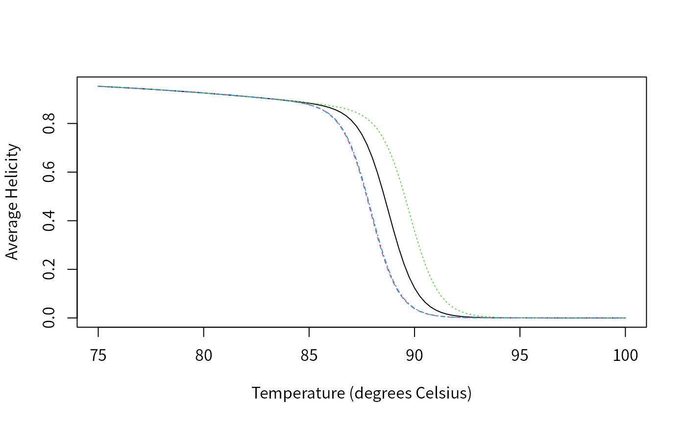
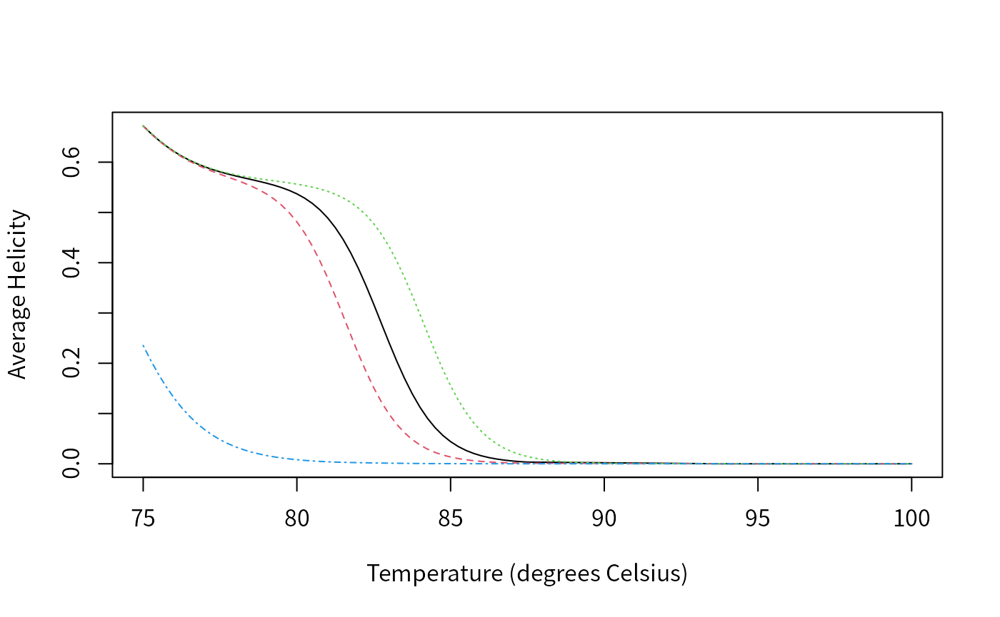

Design Primers That Yield Group-Specific Signatures
Erik S. Wright
2023-08-24
DesignSignatures.RmdIntroduction
The DECIPHER function DesignSignatures
was created to perform the most common primer design task: to
efficiently amplify a shared region of DNA that will produce maximal
amplicon diversity. This goal is independent of the method being used to
differentiate amplicons, although some of the design details may depend
on the technique being employed. DesignSignatures supports
three common methods for distinguishing amplicons: sequencing, High
Resolution Melting (HRM) analysis, and Fragment Length Polymorphism
(FLP) analysis. As a case study, this tutorial focuses on designing
primers to differentiate SNP alleles using HRM analysis. However, the
methods described here can easily be adjusted to the other experimental
techniques.
As input, we will use known sequence variants of the Isocitrate Dehydrogenase 2 ( gene that have been implicated in human gliomas. First, a database is constructed where the variants are identified by their unique name. Next, this database is used to design primers that will yield maximal amplicon diversity. The top scoring primers are further investigated to determine whether they can easily be distinguished experimentally. Finally, the process is repeated using a restriction enzyme to further diversify the amplicons’ signatures. Note that much of the functionality described here is accessible via a web tool at http://DECIPHER.codes.
Getting Started
Startup
To get started we need to load the DECIPHER package, which automatically loads several other required packages.
library(DECIPHER)## Loading required package: Biostrings## Loading required package: BiocGenerics##
## Attaching package: 'BiocGenerics'## The following objects are masked from 'package:stats':
##
## IQR, mad, sd, var, xtabs## The following objects are masked from 'package:base':
##
## anyDuplicated, aperm, append, as.data.frame, basename, cbind,
## colnames, dirname, do.call, duplicated, eval, evalq, Filter, Find,
## get, grep, grepl, intersect, is.unsorted, lapply, Map, mapply,
## match, mget, order, paste, pmax, pmax.int, pmin, pmin.int,
## Position, rank, rbind, Reduce, rownames, sapply, setdiff, sort,
## table, tapply, union, unique, unsplit, which.max, which.min## Loading required package: S4Vectors## Loading required package: stats4##
## Attaching package: 'S4Vectors'## The following object is masked from 'package:utils':
##
## findMatches## The following objects are masked from 'package:base':
##
## expand.grid, I, unname## Loading required package: IRanges## Loading required package: XVector## Loading required package: GenomeInfoDb##
## Attaching package: 'Biostrings'## The following object is masked from 'package:base':
##
## strsplit## Loading required package: RSQLite## Loading required package: parallelHelp for the DesignSignatures function can be accessed
through:
> ? DesignSignaturesIf DECIPHER is installed on your system, the code in each example can be obtained via:
> browseVignettes("DECIPHER")Creating a Sequence Database
We begin with a set of IDH2 sequences in a FASTA file that is included as part of the DECIPHER package. The file contains the common IDH2 allele, and three alleles with single nucleotide polymorphisms (SNPs). Our goal is to design primers that can distinguish all four variants of the IDH2 gene. If you wish to follow along with your own FASTA file of unaligned sequences, be sure to change the path names to those on your system by replacing all of the text inside quotes labeled “\(<<\)path to …\(>>\)” with the actual path on your system.
# specify the path to your sequence file:
fas <- "<<path to FASTA file>>"
# OR find the example sequence file used in this tutorial:
fas <- system.file("extdata", "IDH2.fas", package="DECIPHER")Next, there are two options for importing the sequences into a database: either save a database file or maintain the database in memory. Here we will build the database in memory because it is a small set of sequences and we do not intend to use the database later:
# specify a path for where to write the sequence database
dbConn <- "<<path to write sequence database>>"
# OR create the sequence database in memory
dbConn <- dbConnect(SQLite(), ":memory:")
N <- Seqs2DB(fas, "FASTA", dbConn, "")##
Reading FASTA file chunk 1
##
## 4 total sequences in table Seqs.
## Time difference of 0.04 secs
N # number of sequences in the database## [1] 4Defining Groups
At this point it is necessary to define groups of related sequences in the database we have just created. Ideally, groups should designate the different variants (i.e., strains or alleles) that we hope to distinguish.
In this example, we will define groups based on the allele’s name, which was included in the description of each FASTA record that we imported. This is the most common case, and simply uses each sequence’s name as its group name.
To assign group names directly from the sequence names (FASTA
identifiers), simply run the code shown below. In more complex cases, we
could use the functions IdentifyByRank,
FormGroups, Clusterize, or
TreeLine to define groups.
# if each sequence belongs to its own group,
# then identify the sequences with a number:
desc <- as.character(seq_len(N)) # N is the number of sequences
# OR get the FASTA record description:
desc <- dbGetQuery(dbConn, "select description from Seqs")$description
# show the unique descriptors:
unique(desc)## [1] "IDH2" "R172K" "R172G" "R172M"Now that we have unique names for our four variants, we must add them to the database as the identifier of each sequence.
Add2DB(data.frame(identifier=desc, stringsAsFactors=FALSE), dbConn)## Expression:
## update Seqs set identifier = :identifier where row_names = :row_names
##
## Added to table Seqs: "identifier".
##
## Time difference of 0 secsDesigning primers with diverse signatures
Adjusting Input Parameters
Before using our database to design primers, we must carefully consider the inputs that will be used. These inputs can have a large impact on the outcome, and therefore should be tailored to the experimental goal. Below are recommended inputs for sequencing, FLP, and HRM:
# Designing primers for sequencing experiments:
TYPE <- "sequence"
MIN_SIZE <- 300 # base pairs
MAX_SIZE <- 700
RESOLUTION <- 5 # k-mer signature
LEVELS <- 5 # max number of each k-mer
# Designing primers for community fingerprinting (FLP):
TYPE <- "length"
# it is important to have a width range of lengths
MIN_SIZE <- 200 # base pairs
MAX_SIZE <- 1400
# define bin boundaries for distinguishing length,
# the values below require high-resolution, but
# the bin boundaries can be redefined for lower
# resolution experiments such as gel runs
RESOLUTION <- c(seq(200, 700, 3),
seq(705, 1000, 5),
seq(1010, 1400, 10))
LEVELS <- 2 # presence/absence of the length
# Designing primers for high resolution melting (HRM):
TYPE <- "melt"
MIN_SIZE <- 55 # base pairs
MAX_SIZE <- 400
# the recommended values for resolution
RESOLUTION <- seq(75, 100, 0.25) # degrees Celsius
LEVELS <- 10Select Restriction Enzymes
The following step is not applicable to sequencing experiments (i.e.,
the TYPE above is "sequence"), and is optional
for other types of experiments. If using HRM or FLP analysis to
differentiate amplicon signatures, a digestion step following PCR
amplification may generate fragments with widely different signatures.
This is especially useful when trying to distinguish a large number of
different groups based on small variations. Potential enzymes can be
selected from the built-in RESTRICTION_ENZYMES dataset,
which includes all of the standard enzymes sold by
ENZYMES <- NULL # required for sequencing
# OR select restriction enzymes to consider
data(RESTRICTION_ENZYMES) # load available enzymes
# for this tutorial we will use the enzyme MslI
ENZYMES <- RESTRICTION_ENZYMES["MslI"]
ENZYMES## MslI
## "CAYNN/NNRTG"Designing Primers
Now we can design primers that target all of the groups and result in maximal amplicon diversity:
primers <- DesignSignatures(dbConn,
type=TYPE,
minProductSize=MIN_SIZE,
maxProductSize=MAX_SIZE,
resolution=RESOLUTION,
levels=LEVELS,
enzymes=ENZYMES)## Tallying 8-mers for 4 groups:
## ================================================================================
##
## Time difference of 0.11 secs
##
## Designing primer sequences based on the group 'IDH2':
## ================================================================================
##
## Time difference of 24.93 secs
##
## Selecting the most common primer sequences:
## ================================================================================
##
## Time difference of 3.23 secs
##
## Determining PCR products from each group:
## ================================================================================
##
## Time difference of 83.54 secs
##
## Scoring primer pair combinations:
## ================================================================================
##
## Time difference of 0.34 secs
##
## Choosing optimal forward and reverse pairs:
## ================================================================================
##
## Time difference of 0.51 secs
##
## Finding the best restriction enzyme:
## ================================================================================
##
## Time difference of 2.51 secsThe output data.frame is sorted by the sum of
"score" and "digest_score". However, we can
separately look at the top scoring primers with and without using
restriction enzymes.
primers[which.max(primers$score),] # best primers without digestion## forward_primer reverse_primer score coverage products
## 48 TGGCTGGACCAAGCCCA CCTTGTACTGGTCGCCATGG 0.041666.... 1 4
## similar_signatures missing_signatures enzyme digest_score fragments
## 48 MslI 0 2
primers[which.max(primers$digest_score),] # best primers with digestion## forward_primer reverse_primer score coverage products
## 1 TGGCTGGACCAAGCCCA CTGTGGCCTTGTACTGGTCG 0.035555.... 1 4
## similar_signatures missing_signatures enzyme digest_score fragments
## 1 MslI 0.1805556 13The PCR products digested with MslI are substantially higher
scoring (digest_score) than the undigested primers
(score). Note that the columns
"similar_signatures" and "missing_signatures"
are both empty for this primer set, indicating that all of the groups
have distinct signatures after digestion with the restriction
enzyme.
Assessing the Results
View the Target Sites
We can now look at the target sites of the top scoring primers and restriction enzyme.
PSET <- 1 # examine the top scoring primer set overall
# select the first sequence from each group
dna <- SearchDB(dbConn,
remove="all",
nameBy="identifier",
clause="row_names =
(select min(row_names) from Seqs as S
where S.identifier = Seqs.identifier)",
verbose=FALSE)
f_primer <- DNAStringSet(primers$forward_primer[PSET])
r_primer <- DNAStringSet(primers$reverse_primer[PSET])
patterns <- c(f_primer,
reverseComplement(r_primer),
DNAStringSet(gsub("[^A-Z]", "", ENZYMES)))
BrowseSeqs(dna,
patterns=patterns)We can see in Figure @ref(f1) that the forward and reverse primers target sites on both sides of the SNP, which is located approximately in the center of the amplicon. There are restriction sites next to the SNP, which will shorten the amplicons and further spread their melting curves. Furthermore, the final allele has two adjacent restriction sites, whereas the others all have one.
Plot the Signatures
Next we will compare the signatures of the top scoring primers with
and without digestion. The simplest way to accomplish this is to use the
Biostrings function matchLRPatterns to
find the amplicons. Refer to section~@ref(sec:startup) above for how to
easily obtain the code shown below:
PSET <- which.max(primers$score) # top scoring without digestion
f_primer <- DNAString(primers$forward_primer[PSET])
r_primer <- DNAString(primers$reverse_primer[PSET])
r_primer <- reverseComplement(r_primer)
ids <- dbGetQuery(dbConn, "select distinct identifier from Seqs")
ids <- ids$identifier
if (TYPE=="sequence") {
signatures <- matrix(0, nrow=4^RESOLUTION, ncol=length(ids))
} else if (TYPE=="melt") {
signatures <- matrix(0, nrow=length(RESOLUTION), ncol=length(ids))
} else { # TYPE=="length"
signatures <- matrix(0, nrow=length(RESOLUTION) - 1, ncol=length(ids))
}
colnames(signatures) <- abbreviate(ids, 15)
for (i in seq_along(ids)) {
dna <- SearchDB(dbConn, identifier=ids[i], remove="all", verbose=FALSE)
amplicons <- matchLRPatterns(f_primer, r_primer,
MAX_SIZE, unlist(dna),
max.Lmismatch=2, max.Rmismatch=2,
Lfixed="subject", Rfixed="subject")
amplicons <- as(amplicons, "DNAStringSet")
if (length(amplicons)==0)
next
if (TYPE=="sequence") {
signature <- oligonucleotideFrequency(amplicons, RESOLUTION)
signatures[, i] <- colMeans(signature)
} else if (TYPE=="melt") {
signature <- MeltDNA(amplicons, "melt curves", RESOLUTION)
# weight melting curves by their amlicon's width
signature <- t(signature)*width(amplicons)
signatures[, i] <- colSums(signature)/sum(width(amplicons))
} else { # TYPE=="length"
signature <- .bincode(width(amplicons), RESOLUTION)
for (j in signature[which(!is.na(signature))])
signatures[j, i] <- signatures[j, i] + 1/length(signature)
}
}
if (TYPE=="sequence") {
d <- dist(t(signatures), "minkowski", p=1) # L1-Norm
TreeLine(myDistMatrix=as.matrix(d), method="UPGMA", showPlot=TRUE)
mtext(paste(RESOLUTION, "-mer Profile Distance", sep=""),
side=2, padj=-4)
} else if (TYPE=="melt") {
matplot(RESOLUTION, signatures, type="l",
xlab="Temperature (degrees Celsius)", ylab="Average Helicity")
} else { # TYPE=="length"
if (length(ids) > 20) {
plot(NA,
xlim=c(0.5, length(ids) + 0.5), ylim=range(RESOLUTION),
xlab="Group Index", ylab="Amplicon Length",
yaxs="i", xaxs="i")
axis(1, at=1:length(ids), labels=FALSE, tck=-0.01)
} else {
plot(NA,
xlim=c(0.5, length(ids) + 0.5), ylim=range(RESOLUTION),
xlab="", ylab="Amplicon Length",
yaxs="i", xaxs="i", xaxt="n")
axis(1, at=1:length(ids), labels=abbreviate(ids, 7), las=2)
}
xaxs <- RESOLUTION[-1] - diff(RESOLUTION)/2 # average lengths
for (i in seq_along(ids)) {
w <- which(signatures[, i] > 0)
if (length(w) > 0)
segments(i - 0.45, xaxs[w], i + 0.45, xaxs[w], lwd=2)
}
}
Figure @ref(f2) shows that two alleles will be indistinguishable when
using these primers because their melting curves are nearly overlapping.
We will now compare the result after using a restriction enzyme. Note
that this is only possible because we previously specified a restriction
enzyme in the input to DesignSignatures.
PSET <- which.max(primers$digest_score) # top scoring with digestion
f_primer <- DNAString(primers$forward_primer[PSET])
r_primer <- DNAString(primers$reverse_primer[PSET])
r_primer <- reverseComplement(r_primer)
enzyme <- RESTRICTION_ENZYMES[primers$enzyme[PSET]]
signatures[] <- 0 # initialize the results matrix used previously
for (i in seq_along(ids)) {
dna <- SearchDB(dbConn, identifier=ids[i], remove="all", verbose=FALSE)
amplicons <- matchLRPatterns(f_primer, r_primer,
MAX_SIZE, unlist(dna),
max.Lmismatch=2, max.Rmismatch=2,
Lfixed="subject", Rfixed="subject")
amplicons <- as(amplicons, "DNAStringSet")
if (length(amplicons)==0)
next
digested <- DigestDNA(enzyme, amplicons, strand="top")
digested <- unlist(digested) # convert to DNAStringSet
if (TYPE=="melt") {
signature <- MeltDNA(digested, "melt curves", RESOLUTION)
# weight melting curves by their fragment's width
signature <- t(signature)*width(digested)
signatures[, i] <- colSums(signature)/sum(width(digested))
} else { # TYPE=="length"
signature <- .bincode(width(digested), RESOLUTION)
for (j in signature[which(!is.na(signature))])
signatures[j, i] <- signatures[j, i] + 1/length(signature)
}
}
if (TYPE=="melt") {
matplot(RESOLUTION, signatures, type="l",
xlab="Temperature (degrees Celsius)", ylab="Average Helicity")
} else { # TYPE=="length"
if (length(ids) > 20) {
plot(NA,
xlim=c(0.5, length(ids) + 0.5), ylim=range(RESOLUTION),
xlab="Group Index", ylab="Amplicon Length",
yaxs="i", xaxs="i")
axis(1, at=1:length(ids), labels=FALSE, tck=-0.01)
} else {
plot(NA,
xlim=c(0.5, length(ids) + 0.5), ylim=range(RESOLUTION),
xlab="", ylab="Amplicon Length",
yaxs="i", xaxs="i", xaxt="n")
axis(1, at=1:length(ids), labels=abbreviate(ids, 7), las=2)
}
xaxs <- RESOLUTION[-1] - diff(RESOLUTION)/2 # average lengths
for (i in seq_along(ids)) {
w <- which(signatures[, i] > 0)
if (length(w) > 0)
segments(i - 0.45, xaxs[w], i + 0.45, xaxs[w], lwd=2)
}
}
Figure @ref(f3) shows that the two amplicons which had nearly identical melt curves can be easily distinguished after restriction digest.